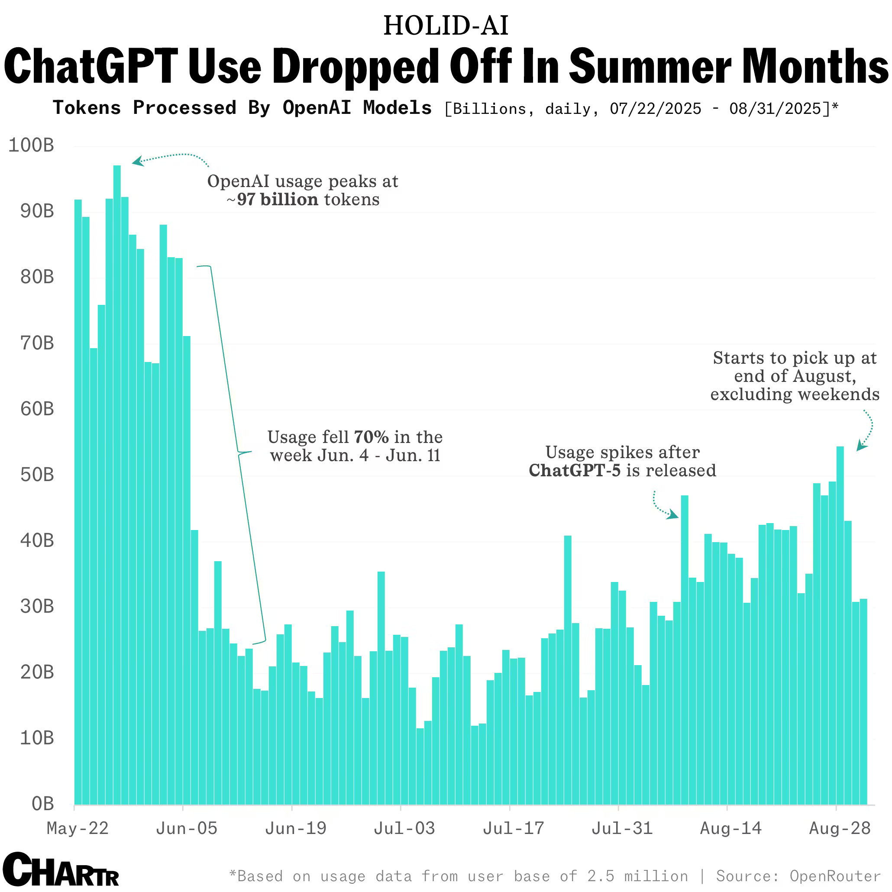
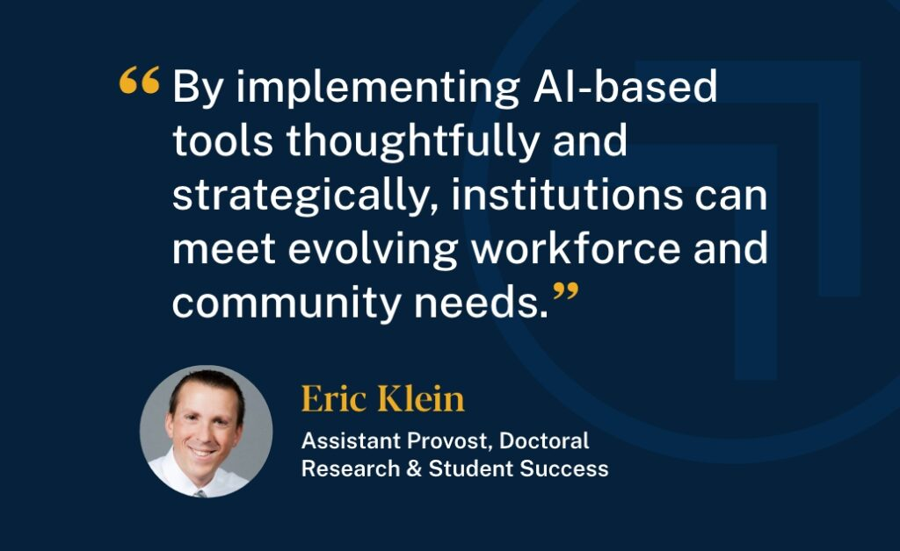
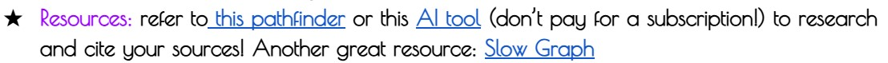

Exhibit
ChatGPT Advertisement
By directing an advertisement that caters two free months of ChatGPT Plus to college students, ChatGPT has integrated itself into education. College students that take demanding classes would benefit from the use of Artificial Intelligence. These are the same college students that excelled in high school when AI existed. Highschool students that weren't able to utilize AI wouldn't have had that extra teacher at their fingertips to strive from.
Many highschoolers have their capabilities limited due to the teaching style utilized; a 90 minute class may not be enough to fully grasp a concept, which is when the use of AI can help these students. Additionally, as time goes on, the split between those who use AI and those who don't gets bigger. This division between the high class and low class in terms of highschool education enlarges due to one class having access to Artificial Intelligence. Many underfunded schools are unable to supply their students with such generative tools, which limits their capabilities and thus contributes to the split between the higher and the lower class.
Some might argue that ChatGPT providing Plus to every college student minimizes the higher education gap between the high and low class. It should be noted that this advertisement isn't catered towards highschool students. Highschool has it's own gap, of AI users and non-AI users; these two groups maintain a gap, due to the helpfulness of AI, that will only increase as AI usage goes on.
In today's society, this is completely normal. Companies have no reason to favor the education of higher education when they are able to profit from it. Students may utilize AI to get what they want, and quit it when they're done. From a psychological perspective, offering a two month free subscription allows
Student Reliance On ChatGPT
Summer Break is a time when students can relax, spend time with their families, and most importantly, have school off. These summer months are when ChatGPT usage is at it's low. By peaking at 97 billion tokens during finals season, when students utilize Artificial Intelligence to help them on their exams, heavy reliance on such tools is observant.
The summer months notice a 70% decline in AI usage; this is due to the lack of work students would use AI on. By developing a reliance for AI, students may learn better from an AI rather than an actual professor. This would assist student's in their academic prowess, emphasizing the use of AI in higher education, and thus resulting in a more definitive split between those who use it and those who don't.
Students who prefer a more "traditional" approach to education wouldn't typically use AI due to ethical issues they may believe. This however doesn't conflict with other students using AI. In other words, AI's integration within education is inevitable. It will always be an option students can take, and it will always further the academic gap between students who do and students who don't.
Some might argue that students who don't use AI may prefer learning from an actual professor. This can cause many limitations that can be seen as axioms. Professors are humans as well. They have lives they need to take care of themselves; they aren't as available as an AI. If questions were to spark when a student only learns from a professor, they would have better chances consulting an AI in order to find a resolution.
In today's society, AI is a good tool to use, but it shouldn't be heavily relied upon. AI should be utilized when the teacher isn't contactable. And a teacher should be used when AI is unavailable. The trend shown in the graph displays dependence on AI by students, which is incredibly dangerous because it may get to a point where you can't work without the use of AI.
Eric Klein
Eric Klein's take on implementing AI states that it can meet workforce and community needs. During this exhibit, it has become apparent that AI siginifcantly benefits those who can afford premium versions, rather than the lower class.
Once again, the split between the high and low classes has enlarged due to the use of AI. Klein explicitly states that AI "allows students to learn at their own pace and style, which can lead to improved engagement and academic outcomes." This however, isn't an option many students have. Students that can't afford AI in education risk falling under the mean, due to the normalization of AI-produced materials from students and teachers.
If more educational facilities promote the use of AI, the gap in higher education between classes would be far less than what it is today. It should be known that AI companies neglect the education such students get, and only care about profiting, even if it means offering two months free to certain college students.
Some might argue that students capable of succeeding without the use of AI can excel in the workforce, but that doesn't take into account the time saved by using AI, which results in more time for the higher-class; the class that benefits from such memberships. The need for big AI companies to profit surpasses their wants to help, which truly expands the gaps between the high and low class in higher education.
Turnitin

The rise in AI over the past few years resulted in lots of mixed feelings. While some groups supported AI, the education industry first saw it as a threat. Could students be utilizing AI to write all of their assignments? This problem would be resolved with mainstream AI detectors like Turnitin. Turnitin not only assists millions of educators worldwide, but also analyzes AI to help us better understand patterns to notice when teaching students.
This artifact benefits the class that wouldn't use AI as much, the lower class that might not be able to afford memberships. School's that utilize Turnitin fear that students used AI for their entire project, which takes away from the learning objective.
Some may argue that this tool helps minimize the academic gap in higher education between high classes and low classes, but many don't consider that the battle between AI and AI detectors leads to training AI models on even more data. Turnitin only fuels the fire to better current AI's. To rephrase, the use of AI detectors makes is a never ending battle that helps both educators and students. Speaking in terms of a higher education, this would be beneficial for lower classes that don't dabble into AI and work for their ethical beliefs regarding AI.
Teacher Encouraging Free AI Use
To avoid paying for certain AI memberships, teachers in higher eduction may start encouraging AI use to their students. The image above shows a teacher allowing their students to use Perplexity on their projects. This shows a shift in priorities in education, in which teachers may start to support the use of AI, rather than treating it as an enemy.
Artificial Intelligence has been a hot topic for years now. Government agencies have their own private models to utilize, which truly shows how dependant society has become on AI, regardless of the class. This however isn't applicable to education. While some teachers may encourage the use of AI, others might despise it.
There are a variety of beliefs when discussing ethical AI usage, and it should be known that no matter the case, the argument is in favor of the lower class, that typically hasn't delved too deep into AI. The lower class presumably wouldn't throw money away on an AI membership, as opposed to the high class.
In today's world, it all comes down to education. The teacher would be the most qualified in this scenario, so deciding whether AI usage is appropriate would be up to them. Some teacher's today allow students to utilize AI, which can help them research for a project, or learn the same concept from a different perspective. Teachers themselves have more control in the gap in higher education between classes than thought of. This develops the thought that teachers control the future of the nation, which is quite possibly an axiom.